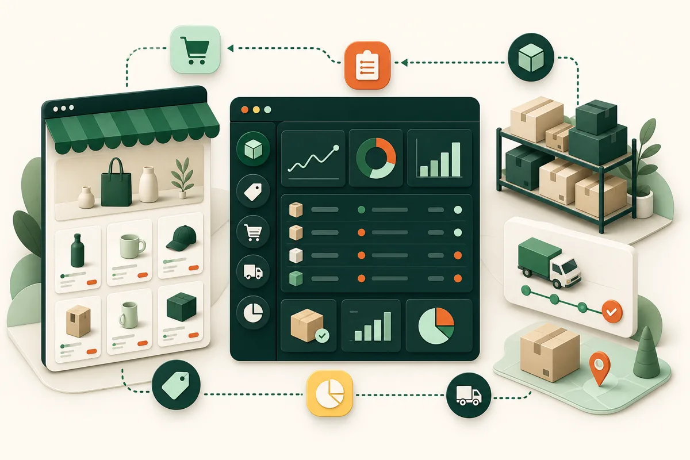
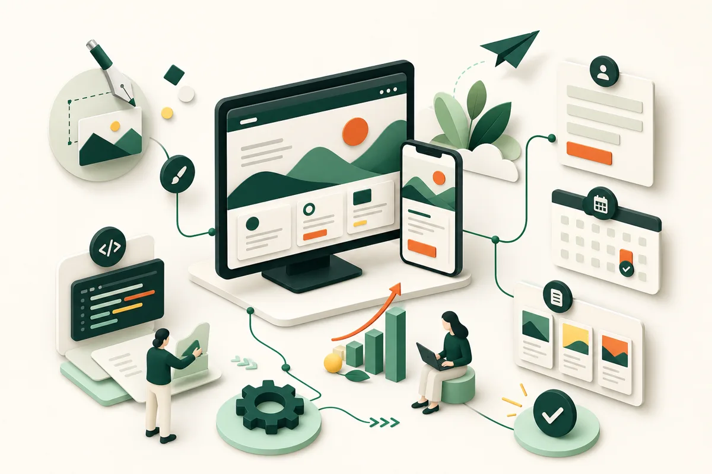

サービスが伝わるWebサイト
事業内容を整理し、初めて見る人にも「誰のための、どんなサービスか」が伝わるページを作ります。
- 企業サイト
- LP
- 採用サイト
業務改善 / Web制作 / AI活用
「LINEの返信が大変」「予約や顧客情報がバラバラ」「今のシステムが使いにくい」。 そんな困りごとを整理し、WebとAIで無理なく使い続けられる形にします。
What can be built
専門用語や詳しい仕様書は必要ありません。今のやり方と困っていることを伺い、 必要な仕組みを一緒に決めます。以下は実装できる代表例です。
事業内容を整理し、初めて見る人にも「誰のための、どんなサービスか」が伝わるページを作ります。
フォーム受付、日程調整、自動返信、担当者への通知までをつなぎ、対応漏れを減らします。
よくある質問への案内や追客を自動化し、AIが判断できない内容だけ人が確認できるようにします。
連絡先、対応履歴、現在の状態、次にやることを一か所にまとめ、探す時間を減らします。
メールやチャットから来た依頼を集め、優先順位、期限、担当、進み具合を見えるようにします。
商品、価格、在庫、注文、発送状況を管理しやすくし、更新ミスや確認作業を減らします。
企画、下書き、素材整理、確認、修正を一つの流れにし、AIと人の担当を分けます。
毎回同じ手順で行う集計、整形、転記、レポート作成を自動化し、手入力を減らします。
情報収集や登録などの反復操作を、安全確認を挟みながら自動で進める仕組みにします。
作った人がいない、資料がない、止められない仕組みを調査し、安全に直せる状態へ整えます。
作ったものをインターネットへ公開し、異常の発見、復旧、バックアップまで考えて運用します。
どの端末でも同じ状態から作業でき、変更履歴が残り、他の担当者にも渡せる形にします。
当てはまる項目がなくても大丈夫です。
今の作業を見ながら、楽にできる場所を一緒に探せます。
Case studies
「何を作ったか」だけでなく、「どんな問題を、どう変えたか」が分かる形で紹介します。 守秘義務のため、名称・画面・数値の一部は匿名化しています。
複数アカウントを運用しており、別サービスの案内が混ざると信用問題になる。
アカウント別の会話、追客、名前の差し込み、AI判断、人への確認を分離。
自動対応できる範囲と、人が見るべき範囲を明確にし、事故を防ぎながら運用。

国ごとの価格や関税、購入制限、在庫など、確認項目が多く更新ミスが起きやすい。
価格・商品画像・商品番号・購入制限を管理画面から安全に一括更新。
営業中のサイトを止めずに改善を並行し、確認後に本番へ反映できる体制へ。
企画、台本、素材、確認が別々に管理され、担当者しか進め方が分からない。
企画からAI生成、レビュー、素材管理、修正までを同じ画面で進行。
AIに任せる作業と人が判断する作業を分け、同じ手順で繰り返せる形に。

魅力や違いをどう説明すればよいか分からず、制作会社へ渡す資料もない。
ヒアリングから構成、デザイン、スマホ対応、問い合わせ、公開まで一貫対応。
初めて見る人が内容を理解し、迷わず問い合わせへ進めるWebサイトに。
掲載画像は、実装内容を分かりやすく説明するためのイメージです。実在する顧客画面や機密情報は使用していません。
How it proceeds
最初から完成した仕様書は必要ありません。動いているサービスを止められない場合や、 まず調査が必要な場合も、影響を確認しながら進めます。
今のやり方、誰が使うか、何に時間がかかるかを言葉にします。
作る範囲と優先順位を決め、画面や流れを見える形で共有します。
通常の使い方だけでなく、入力ミスや例外も含めて確認します。
利用状況、履歴、バックアップを残し、継続して改善できるようにします。
Behind the scenes
お客様が技術を選ぶ必要はありません。目的に合うものをこちらで選び、 後から他の担当者が見ても分かる履歴と資料を残します。
About
フリーランスエンジニアのAndoです。Webサイトを作るだけでなく、 連絡対応、EC、日々の手作業、AI活用など、事業の流れ全体を見ながら改善しています。
きれいな新規開発だけでなく、長く運用されて複雑になった仕組みの調査、 「誰も全体を把握できていない」状態の整理も得意です。 専門用語だけで進めず、何が変わり、何を確認すればよいかを分かる形で共有します。
Contact
「こういうことはできる？」「今の仕組みがよく分からない」という段階で大丈夫です。 下の3点を分かる範囲で送っていただければ、次に確認することをこちらで整理します。